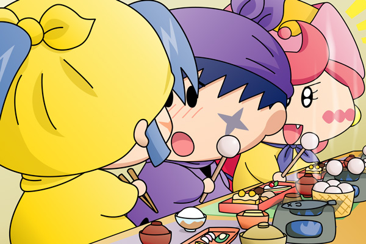

だんだんと日が傾き、クモモペンションでも夕食の時間になりました。クモモの呼ぶ声につられてみんなが１階の食卓へ降りてみると、すでにテーブルには豪華な夕食が並べられていました。
パピィ「わぁ、なんて豪華な夕食なのかちら。
クモモたんの料理の腕前はプロ級ね！」
ヤシチ「うんうん、さすがはクモモ！
夕食にも抜かりはないのだ」
クモモ「てへへクモ」
ムルモ「きゃは、焼きマシュマロがあるでしゅ～っ」
リルム「わたくしの大好きなシュークリームもありますわ」
クモモ「さぁ、どうぞお好きな席に座って欲しいクモ。
お菓子の食べられないヤマネさんはこちらにお願いするクモ」
クモモが案内した席にはお菓子ではなく、ご飯とおかずが並べられています。
席は２列になっていて、ヤマネが椅子に座ると同時にサスケとハンゾーがヤマネを取り囲むように座りました。そしてアロマが座るとムルモがその隣に、ムルモを追うように隣にパピィが座ります。さらに両隣にパンタとリルムを従えたミルモが座ると、ヤシチとアクミとクモモが残った席に座りました。
クモモ「皆さん席についたクモね。
それでは今日のいただきますはミルモさんにお願いするクモ」
ミルモ「おう、まかせとけ！ んじゃ行くぞ～」
みんな「いただきま～す！」
かけ声とともにみんなは勢いよくお菓子を食べていきます。先ほどお菓子の取り合いを行ったミルモとヤシチも、さすがに懲りたのかちょっかいを出さずに黙々と食べているようです。

一方、お菓子ではなくご飯を食べているヤマネの方では・・・。
サスケ「ヤマネ～。
一人だけお菓子じゃなくてご飯だなんてかわいそうだぜ・・・。
オイラのお菓子をちょっとだけ食べてみるかだぜ？」
ヤマネ「いいえ、サスケ先輩たちの喜ぶ顔が見れれば淋しくなどありませぬ」
サスケ「ヤマネ・・・」
ヤマネ「それにクモモ殿のご飯もおいしいでございますし。
サスケ先輩のその気持ちがとってもうれしいのでございます」
サスケ「オイラもヤマネの喜ぶ顔が見れてうれしいんだぜ」
ヤマネから暖かくお礼を言われたサスケは「ムルモなんかには負けないんだぜ！」と心の中でガッツポーズを取っています。アクミが後ろからサスケのお菓子を狙っているとも知らずに・・・。
少しずつストーリーは進み、一日の終わりを表す夕食へとシーンが移りました。前置きはここまでで、次回からは新展開(?)の本編ストーリーがやっと始まります（今度こそ本当）。
今回の夕食シーンはサスケたちにしか焦点を当てていませんが、他のキャラがどんな会話をしながらお菓子を食べているのかを皆さんでご想像いただけたら幸いです。ちなみに今回のサスケ、前回の絵のヤマネとムルモのシーンを目撃してしまったせいで、ムルモに対して強いライバル心を持っていたりします。サスケのこういう素直なところが私は大好きなのです(^^)。
(2007/11/14)